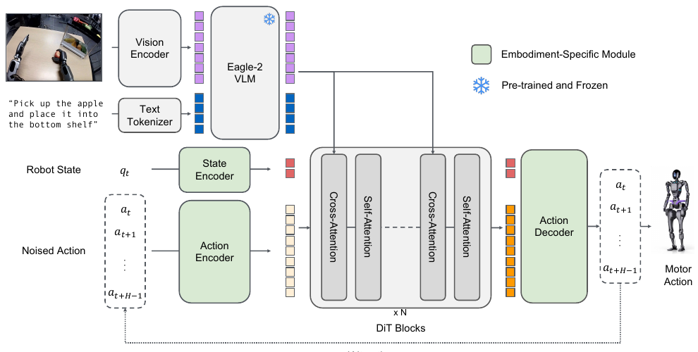

GR00T N1
An Open Foundation Model for Generalist Humanoid Robots.
GR00T N1은 휴머노이드 로봇을 위한 open Vision-Language-Action foundation model이다. Eagle-2 VLM이 장면과 언어 지시를 해석하는 System 2, diffusion transformer가 빠르게 motor action을 만드는 System 1을 결합한다. 핵심 과제는 휴머노이드 데이터의 부족과 서로 다른 로봇 몸체 사이의 action space 차이를 하나의 정책으로 넘는 것이다.
Problem
휴머노이드에는 아직 ‘데이터 인터넷’이 없다
웹에는 이미지와 텍스트가 많지만, 휴머노이드가 두 팔과 손으로 실제 물체를 조작한 trajectory는 매우 비싸다. 더구나 로봇마다 관절 수·센서·제어 방식이 달라 데이터를 단순히 합치면 서로 다른 ‘data island’가 된다. GR00T N1은 이 이질적인 경험을 공통의 VLA 학습 문제로 바꾸는 것을 목표로 한다.
적은 실제 휴머노이드 demonstration
양팔과 dexterous hand를 teleoperation으로 수집하는 비용이 높다. 실제 데이터만으로는 foundation model 규모의 coverage를 만들기 어렵다.
서로 다른 embodiment
single arm, bimanual arm, 휴머노이드는 state와 action의 차원이 다르다. 하나의 고정 action head로는 이들을 바로 함께 학습할 수 없다.
언어 이해와 고주파 제어의 동시 요구
로봇은 “사과를 아래 선반에 넣어”의 의미를 이해하면서도 부드럽고 빠른 연속 관절 제어를 해야 한다.
Key Idea
느리게 이해하고, 빠르게 움직이는 Dual-System VLA
논문은 사람의 이중 과정 사고에 비유해 두 역할을 분리한다. System 2는 비교적 느린 VLM으로 시각과 언어를 해석하고, System 1은 그 표현을 조건으로 하여 closed-loop motor command를 더 높은 빈도로 생성한다. 하지만 둘은 별도 파이프라인이 아니라 end-to-end로 결합해 학습된다.
Eagle-2 VLM: 무엇을 해야 하는가
여러 이미지와 task instruction을 chat 형식으로 받아 Eagle-2가 vision-language token을 만든다. 공개 GR00T-N1-2B는 총 2.2B parameter이며, 이 중 VLM은 1.34B다.
DiT action policy: 지금 어떻게 움직일 것인가
Diffusion Transformer가 noisy action, 현재 proprioceptive state, VLM token을 함께 보고 연속 action chunk를 denoise한다.
Cross-attention으로 연결
DiT의 self-attention은 state와 action token 사이를 처리하고, cross-attention은 Eagle-2의 image·text token에서 task context를 가져온다.
Model Architecture
VLM feature가 DiT의 행동 생성을 조건화한다

입력: image + language + robot state
각 frame은 224×224로 인코딩되어 64개 image token이 되고, language token과 함께 VLM을 통과한다. 현재 joint position·velocity, base pose, end-effector pose 같은 state도 함께 사용한다.
Embodiment-specific adapter
로봇마다 차원이 다른 state와 action은 각 embodiment의 MLP encoder/decoder가 shared embedding dimension으로 투영하고 다시 원래 action space로 되돌린다.
16-step action chunk
한 시점에 (A_t=[a_t,\ldots,a_{t+15}])를 생성한다. 따라서 매 control step마다 action 하나만 autoregressive하게 내는 구조가 아니다.
Flow Matching
System 1은 noise에서 연속 행동으로 간다
GR00T N1은 action flow matching을 쓴다. 학습 때 정답 action chunk와 Gaussian noise를 섞고, 모델은 noise를 정답 action으로 옮기는 vector field를 배운다. 추론 때는 순수 noise에서 시작해 이 방향을 여러 번 적용한다.
Noisy action
\(\tau=0\)이면 거의 noise, \(\tau=1\)이면 정답 action chunk다.
Vector-field loss
VLM context \(\varphi_t\), state \(q_t\), noisy action을 보고 denoising 방향을 맞춘다.
Inference
Forward Euler로 action을 업데이트한다. 논문 구현은 embodiment 전반에 (K=4) denoising step을 사용한다.
Data Pyramid
실제 로봇·합성 trajectory·사람 영상을 함께 쓴다
데이터가 많을수록 로봇 몸체에 특화되기는 어렵고, 실제 로봇에 가까울수록 양은 줄어든다. 논문은 이 trade-off를 세 층의 data pyramid로 구성한다. 아래층은 폭넓은 visual/behavior prior를, 위층은 실제 embodiment에 대한 grounding을 제공한다.
Web data와 human egocentric video
사람 영상에는 관절 action label이 없다. 연속 frame \(x_t,x_{t+H}\)에서 VQ-VAE 기반 latent action을 추출해, 별도 LAPA embodiment의 action label로 사용한다.
Simulation과 neural trajectory
DexMimicGen으로 simulation trajectory를 만들고, video generation model로 현실 teleoperation의 counterfactual 영상을 늘린다. 88시간의 in-house teleoperation을 약 827시간 neural trajectory로 확장했다.
Real robot trajectory
Fourier GR-1 humanoid, Open X-Embodiment, AgiBot-Alpha 등 실제 action label이 있는 데이터를 사용해 최종 motor control을 현실에 정렬한다.
Training
모든 데이터를 flow-matching 과제로 통합한다
Pre-training
real/synthetic robot data에는 실제 robot action과 latent action을, 사람 영상에는 latent action을 target으로 사용한다. neural trajectory에는 latent action과 real-robot IDM이 예측한 pseudo-action을 사용한다.
Embodiment를 구분해도 model weight는 공유
각 데이터의 action 의미는 같지 않으므로 adapter는 embodiment별로 두되, VLM과 DiT의 공통 표현은 여러 data source에서 함께 학습한다.
Post-training
목표 로봇 한 embodiment의 작은 task data로 fine-tuning한다. 이때 VL backbone의 language component는 고정하고 나머지를 조정한다. neural trajectory는 real trajectory와 1:1로 섞어 low-data adaptation도 보완한다.
Takeaway
모델 하나보다 ‘행동 데이터를 만드는 방법’까지가 N1이다
VLM token을 action token으로 바꾸지 않는다
π0처럼 GR00T N1도 VLM의 language output을 직접 이산 action으로 쓰기보다, VLM feature를 DiT에 조건으로 넣고 continuous action을 flow matching으로 만든다.
Action 없는 영상도 버리지 않는다
latent action과 inverse dynamics pseudo-action을 이용해 human video와 생성 영상도 VLA pre-training에 포함시킨다. 이것이 데이터 피라미드를 가능한 전략이다.
공개 N1-2B의 실용적 속도
논문은 L40 GPU에서 bf16 기준 16-action chunk를 63.9ms에 샘플링한다고 보고한다. 빠른 System 1과 범용 System 2의 결합을 실제 제어 속도까지 연결한 사례다.
원문: GR00T N1: An Open Foundation Model for Generalist Humanoid Robots ↗